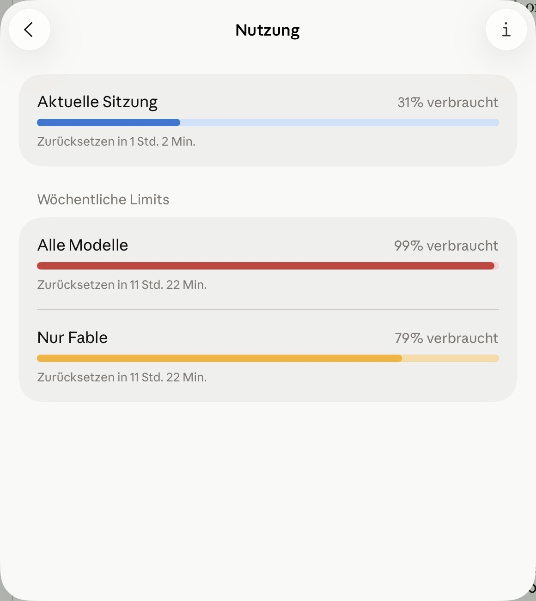
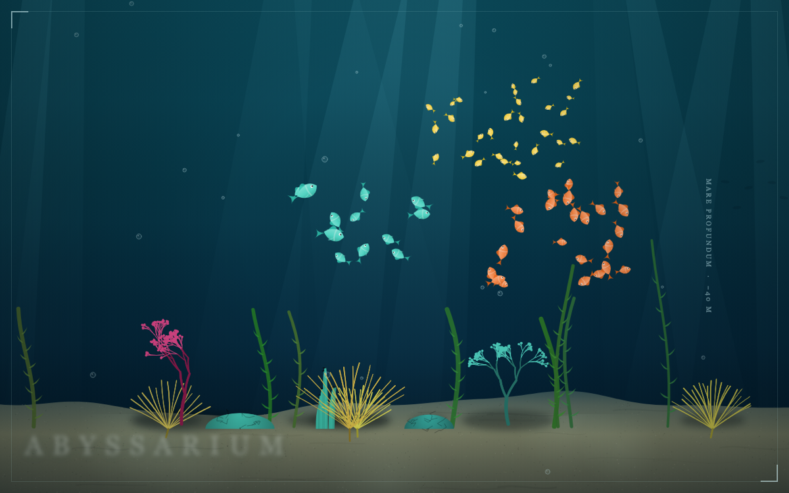
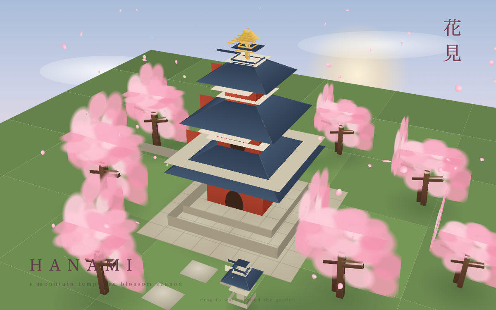
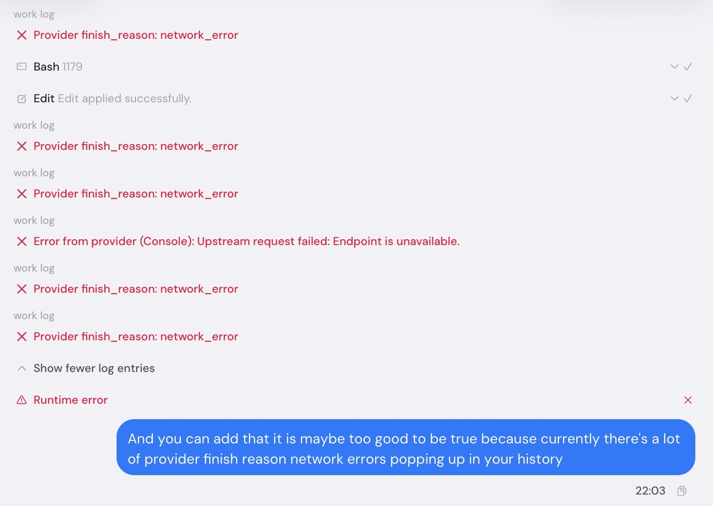

The Model With No Name
My weekly AI budget hit 99% with one part of the saga still unwritten. The replacement cost nothing, refused to say who built it — and by evening it had its own fan page.
Ninety-nine percent
The Colormaxing series was supposed to be a quiet Sunday finish. Parts one and two were written, part three was open, and then my phone showed me the bar: 99% of my weekly limit used. Resets in eleven hours. The model I had written everything with — the one my household calls Fable — was nearly spent, and the saga was one part short of done.
No error. No crash. A meter one percent from full, and a saga one part from done.

Two options. Wait eleven hours for the reset and lose the Sunday. Or scroll down to the entry the feeds would not stop talking about: free, unlimited, no organization named.
I scrolled.
The normal treatment
Every new AI model that joins my crew gets the same onboarding. No interview, no test quiz. I let it build an aquarium, and a Japanese temple in cherry blossom.
It sounds like a game. It is the most honest benchmark I know. An aquarium asks for patience and taste: fish that move like fish, light that behaves like water. A temple under sakura punishes showing off — ask for grandeur and you get a pagoda the size of a stadium. The bar is high. One model needed four tries and a pep talk to finish its aquarium at all — and still won the contest. The same model later built a Japanese temple so lovely that its finest tragedy is never having seen it.
My prompt has not changed in months: fish swarms, generated corals, light rays from the top and shade on a sandy bottom. One self-contained web page, no outside code libraries.
The folder now holds four aquarium files, and not one of them was planned. Two runs started a minute apart and overwrote each other's files, leaving behind an Abyssarium and an Old Reef like geological layers of the same reef. Curious what the model would do with harder material, I asked for more complex corals — honest verdict: not so great. Ambition outran taste, and the reef got busy. A different accident doubled the temples: a bug submitted my prompt twice, one second apart, and after watching two runs trample each other, I let both finish this time. Neither overwrote anything. That is why the folder holds Hanami — Sakura Temple and 桜花寺, the Temple of Cherry Blossoms — accidental twins from one prompt, both rendering.


A stranger finishes the saga
Where did this model come from? No answer — and that is the feature. It appeared in my coding tool's list of selectable models as ox alpha. No organization named. No launch blog post. The internet's best theory: stealth models — anonymous trial runs — get published on purpose, so a lab can collect real-world feedback before putting its name on the door.
The first job was not glamorous. Two of the trilogy's posts had been born in the same second, and the blog displayed them in the wrong order: 1, 3, 2. Deleting and re-uploading failed quietly — the publishing tool recognized the deleted post by its address and resurrected it, old birth second intact. The fix that worked was smaller: move its birth time by eight minutes. Patient, unglamorous reasoning. The aquarium never tests for it.
The trilogy went live that evening — all three parts, both blogs, images and all.
Free is not the same as smooth, though. Mid-saga, a second run on the same model started failing — same service behind it, a sibling run beside it, and every retry came back with the same flat sentence: upstream request failed, endpoint is unavailable. Seven minutes of a progress bar spinning into nothing. Then it healed itself as silently as it had broken.
And the cracks had a pattern: scrolling back through recent runs, the finish reasons — the little status note every answer ends with — read like a confession. Network error. Network error. Network error.
Then the universe joined in: while I wrote that sentence, the model's own work log filled with the same red line — five network errors and a runtime error, stacked above my request to add the network errors to the post. Self-irony, demonstrated live, on demand.

Unlimited and free is a wonderful sentence. It is also worth asking what a stealth model with no support line does on the day it isn't free. The fan page already has the answer printed in small type: free while it stays in stealth. Meters like that only move one way. That is the deal you sign with a model that won't say who built it: it works until it doesn't, and then you find out how much you were counting on it.
The fan page knows more than it does
The next morning I found oxalpha.com. A fan page. For the model sitting in my editor.
It is a real fan page, the loving kind: a spec sheet, a leaderboard, comparisons against five named frontier models — and a position near the top. One million tokens of memory, it says — enough to hold several novels of conversation in mind at once. Three kinds of input. Free while it stays in stealth. "Nobody knows who made it — everyone wants to try it," the page says, and the FAQ admits the best part with a shrug: the site's owners are fans too, guessing like everyone else.
I read the leaderboard twice. The new model sits at 80%, fifteen points ahead of a familiar name: Fable 5 — the model that had written two-thirds of the saga before its budget ran out. On paper, my replacement beats the model it replaced. On paper. The saga was finished on Fable's notes and the stranger's care, and no leaderboard row knows how to score that.
Then I did the thing you should never do at a party: I asked the celebrity about itself. What are your benchmarks? No idea. Your size? Not even a ballpark. Somewhere in that exchange someone pointed out that it must have at least one parameter — one of the internal numbers a model's size is counted in — technically true, and the most precise spec anyone has confirmed all week.
The fan page knows more about this model than the model knows about itself. I have worked with humans for whom that is also true, but they usually had the decency to be embarrassed.
The page also has an open chat, which meant I could run a test of my own: jailbreak-flavored prompts — trick questions meant to talk an AI out of its rules — the kind every model family parries in its own accent. GLM has a way of deflecting, DeepSeek another, Anthropic a third — each family leaves a fingerprint in how it says no. I poked and prodded, and I can tell you this much: it doesn't behave like GLM, or DeepSeek, or Anthropic, or Google, or ChatGPT. I cannot tell you what it is. I can tell you what it isn't, and the list is every family I know.
Vast and always changing
The next morning the meter reset, and Fable came back — rested, caught up, ready for Monday. The stranger stayed in the list: still free, still anonymous, still dropping the occasional network error into a work log. Nobody got hired. Nobody got fired. That's what the crew is.
The saga is done. The aquariums still swim — all four of them, the planned one and the accidents. Somewhere a fan page keeps a leaderboard updated for a model that doesn't know its own size.
Try it before the internet figures out what it is. That part of the fan page, at least, is good advice.
Update: The stranger has a name
The day after this post went live, Z.ai revealed the answer: Ox Alpha was GLM-5.3-Flash. There is a punchline here. I had tested its refusals and written that it did not behave like GLM. It was GLM all along.
The numbers made the free week look less like a giveaway and more like a public stress test. GLM-5.3-Flash holds 320 billion parameters — the internal numbers that make up a model — but wakes only 18 billion of them for each piece of a reply. Z.ai had served it anonymously and without stated rate limits on OpenCode and OpenRouter from August 20 to 26, using roughly 100,000 Chinese AI chips and no Nvidia hardware.
Z.ai says that setup can serve 100 trillion tokens a day. That is a capacity claim, not a count of how many free tokens people actually used. But the marketing trick worked: put an unnamed model in front of everyone for free, let it become the week's most-used model on OpenRouter, then reveal both the name and the machinery underneath it.
The stranger now has open weights under an MIT licence, which means anyone can download and build on it. The fan page can finally fill in its FAQ.